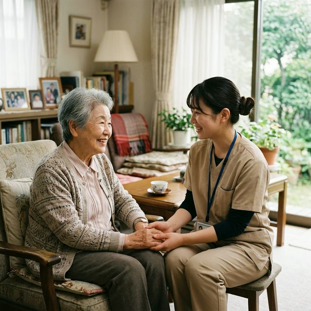

身体介護
利用者様の身体に直接触れて行う介助です。安全で負担の少ないケアを行います。
- 入浴・清拭の介助
- 排泄介助（おむつ交換など）
- 食事介助
- 衣服の着脱介助
宮城県塩竈市・多賀城市エリアに密着。
私たちがご家族の負担を軽減し、
安心の在宅生活をサポートします。
日中は仕事があり、親の介護に十分な時間が取れない…
退院後の在宅生活、家族だけで支えられるか不安…
排泄や入浴の介助が体力的に限界を迎えている…
介護は終わりの見えないマラソンのようなものです。ご家族だけで抱え込んでしまうと、心も体も疲弊してしまいます。
「訪問介護ステーション つむぎ」では、ご自宅での生活を支援するだけでなく、主介護者であるご家族の「休息」を作ることも重要な役割だと考えています。
長年住み慣れた家で、穏やかな日々を長く続けていけるよう、私たちが確かな技術と温かい心でサポートいたします。

塩竈市・多賀城市エリアに限定し、移動時間を最小限に。その分、利用者様へのケアの時間と、緊急時の迅速な対応を実現しています。
介護福祉士など、確かな技術と豊富な経験を持ったスタッフが担当。常にスタッフ同士で情報共有・研修を行い、ケアの質を高めています。
私たちが介入することで、ご家族が笑顔で過ごせる時間を作ります。レスパイト（休息）ケアの観点を大切にしたサービス提供を行います。
利用者様の身体に直接触れて行う介助です。安全で負担の少ないケアを行います。
利用者様が単身、あるいはご家族が病気等で家事が困難な場合に日常生活を支援します。
介護保険の枠に収まらない、より柔軟でパーソナルなご要望にお応えするサービスです。
職場のリアルな雰囲気や、日々のケアの様子をお届けします！
まずは、お電話または当サイトのお問い合わせフォームよりお気軽にご連絡ください。
担当のケアマネジャー様がいらっしゃる場合は、ケアマネジャー様経由でのご相談も可能です。
サービス提供責任者がご自宅を訪問し、利用者様の状況やご家族のご要望をお伺いします。
（ケアマネジャー様同席のもと）最適なケアプランの原案を作成し、ご提案いたします。
サービス内容や重要事項について丁寧にご説明し、ご納得いただけましたらご契約手続きを行います。
その後、利用者様の生活リズムに合わせた具体的な訪問の曜日や時間帯を決定いたします。
計画に基づき、担当ヘルパーが定期的にお伺いし、心を込めてサービスを提供いたします。
サービス開始後も、心身の状況や生活環境の変化に合わせて柔軟にサポート内容を調整します。
「訪問介護ステーション つむぎ」では、スタッフ一人ひとりがやりがいを持って働ける環境づくりに力を入れています。
子育て中のママさんヘルパーや、ブランクがある方も大歓迎。
シフトは柔軟に対応します。まずは見学からでも構いません！
| 事業所名 | 訪問介護ステーション つむぎ |
|---|---|
| 所在地 | 〒985-0000 宮城県塩竈市〇〇1-2-3 カスヤビル1F |
| 電話番号 | 022-000-0000 |
| 営業時間 | 9:00 〜 18:00（土日・年末年始は休業） ※サービス提供自体は365日対応可能です |
| サービス提供エリア | 塩竈市、多賀城市、利府町（一部） |